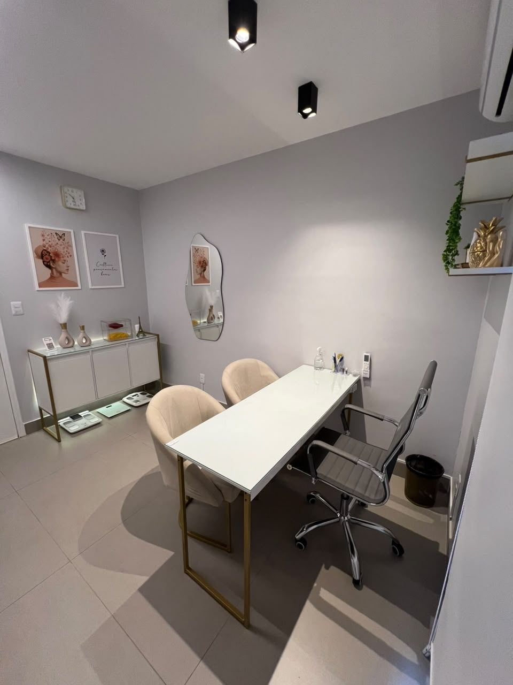
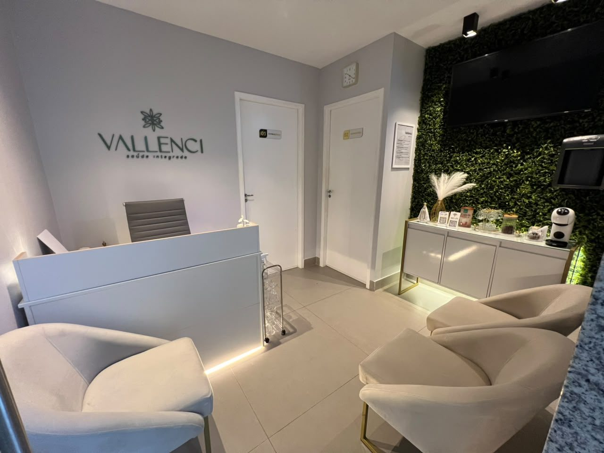
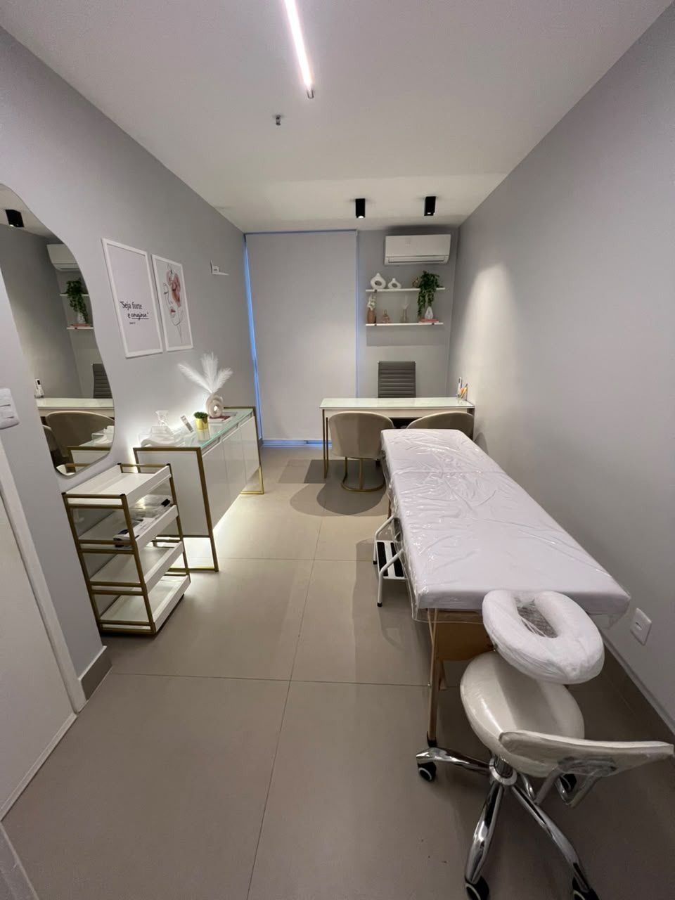
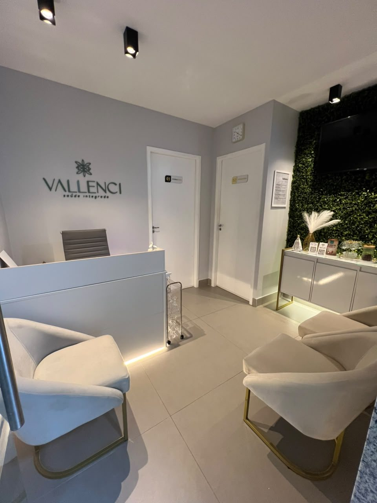
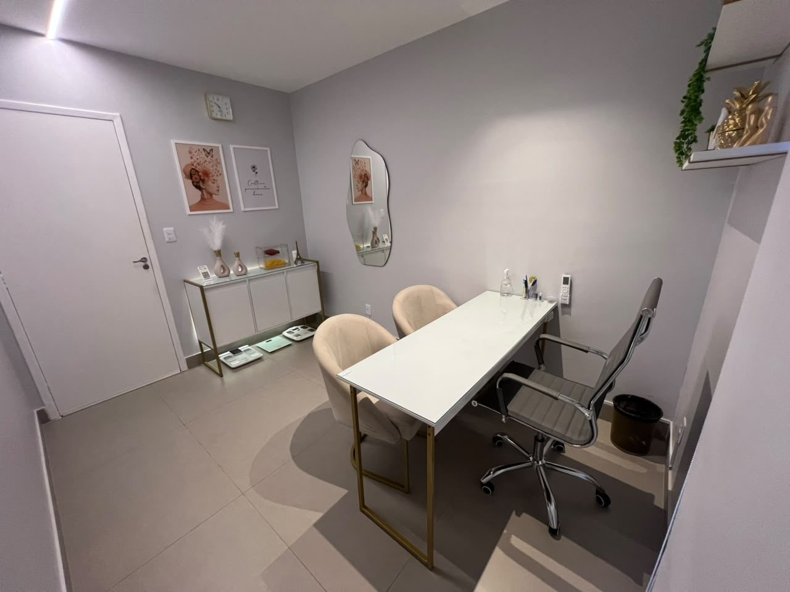
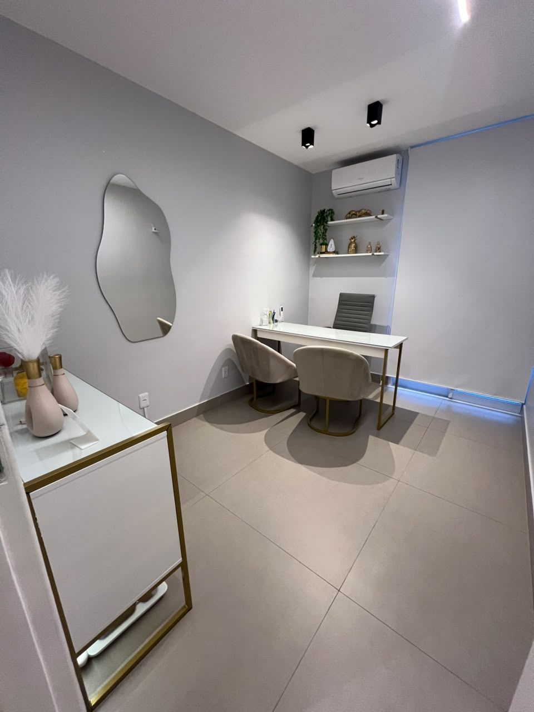
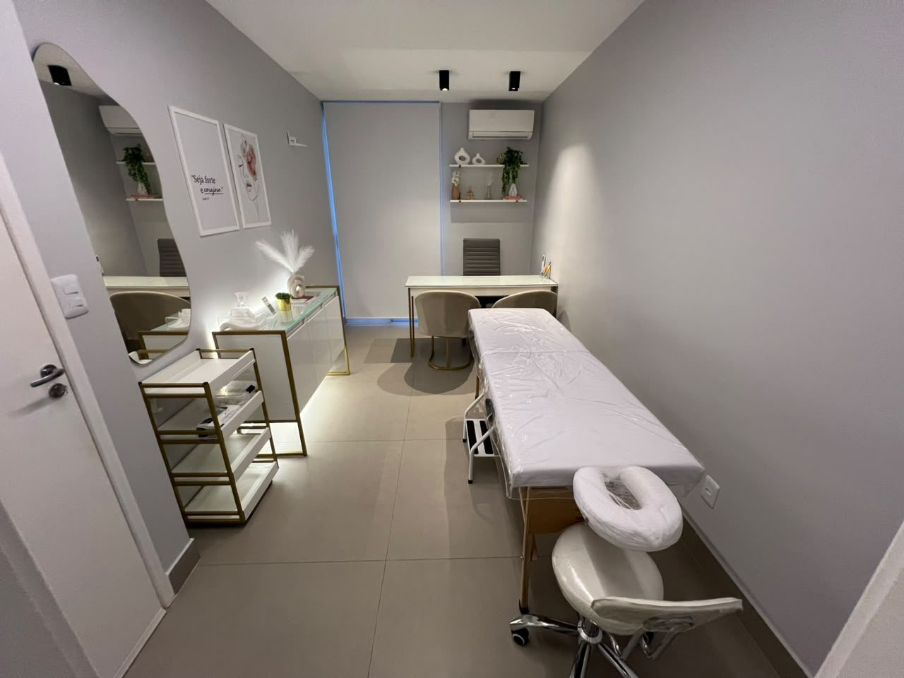
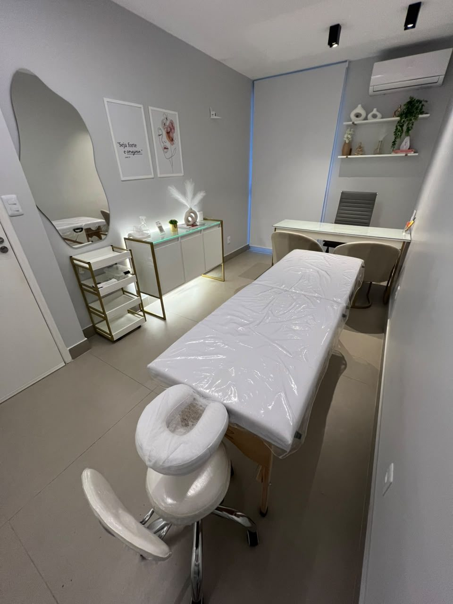
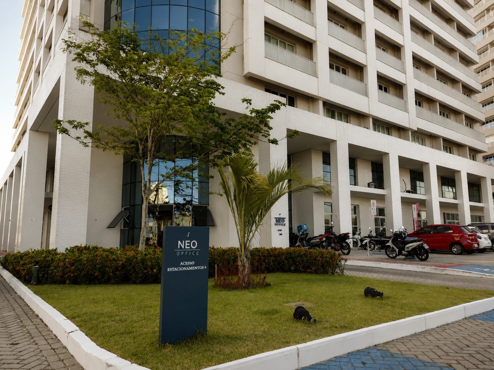

Atenda seus pacientes em uma estrutura profissional em Aracaju — sem precisar arcar com todo o custo, o risco e a complexidade de montar sua própria clínica.
Quero conhecer o espaçoSe alguma dessas situações parece familiar, pode ser exatamente para isso que a Vallenci foi pensada.
Montar uma clínica própria custa — mesmo nos meses em que você atende pouco.
Aluguel integral, condomínio, mobília, reforma, recepção, contas fixas. Boa parte desses custos existe independentemente de quantos pacientes você atendeu naquele mês. É um compromisso assumido antes de você saber se sua agenda vai sustentá-lo.
O risco não é montar uma clínica. É montar antes da hora certa.
E se sua estrutura pudesse crescer junto com a sua agenda — não antes dela?
Na Vallenci, você tem acesso a uma estrutura profissional de verdade, na proporção exata da sua necessidade. Começa com poucas horas, sem comprometer seu caixa, e aumenta sua presença conforme sua agenda cresce.
Não é alugar uma sala por hora. É ter uma estrutura profissional disponível na proporção exata do seu atendimento.
Quero entender como funcionaTudo pensado para você chegar, atender e ir embora — sem se preocupar com o resto.

01Ambiente pronto para atendimento.
pendente: lista exata de itens inclusos
02Para receber seus pacientes com profissionalismo.

03Segunda sala / maca disponível.





A Vallenci fica no Neo Office Jardins, em frente à saída C do Shopping Jardins — um dos endereços mais reconhecíveis de Aracaju. Fácil de indicar aos seus pacientes, e que já comunica profissionalismo antes mesmo da consulta começar.
Av. Dr. José Machado de Souza, 220 — Sala 803, 8º andar
Jardins, Aracaju/SE

A Vallenci reúne profissionais de nutrição, estética, performance e áreas relacionadas à saúde, além de equipamento de bioimpedância InBody. Atender aqui significa fazer parte de uma estrutura pensada para o setor de saúde — não de um espaço genérico adaptado.
Você contrata horas avulsas ou um pacote mensal — o formato acompanha sua necessidade, não o contrário.
Até 20 horas mensais de atendimento presencial em estrutura profissional completa
a partir de R$ 600/mês (R$ 30/hora)
Sem contrato de aluguel tradicional, condomínio ou investimento inicial em reforma e mobília.
Quero encontrar o formato certo para minha agendapendente: confirmar valores e pacotes finais antes de publicar
Você contrata horas avulsas ou um pacote mensal, conforme sua agenda, e utiliza a estrutura da Vallenci para atender seus próprios pacientes.
Em confirmação — depende dos itens definidos como inclusos na sala.
Sim. O escopo exato do suporte oferecido está em confirmação — recebimento do paciente e/ou apoio de agenda.
Profissionais da área da saúde em geral — nutrição, fisioterapia, estética, massoterapia, pilates, odontologia e áreas relacionadas à performance e saúde.
Você pode começar com horas avulsas e migrar para um pacote mensal conforme sua agenda cresce. As regras exatas de transição entre formatos estão em confirmação.
Fale com a nossa equipe pelo WhatsApp para conhecer a estrutura e encontrar o formato certo para o seu momento.
Fale com a Vallenci e descubra o formato ideal para o momento da sua agenda.
Quero conhecer o espaço